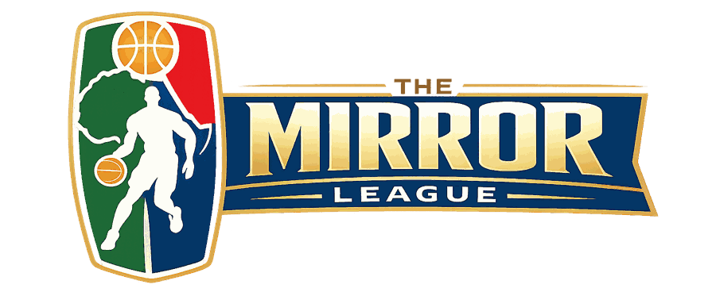
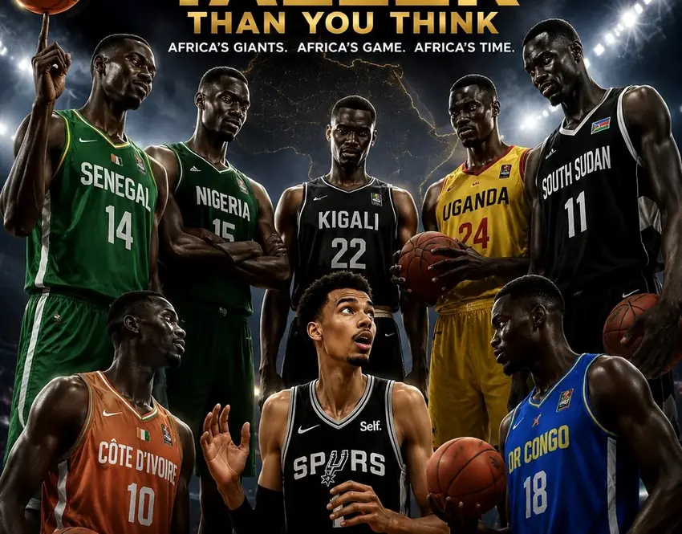
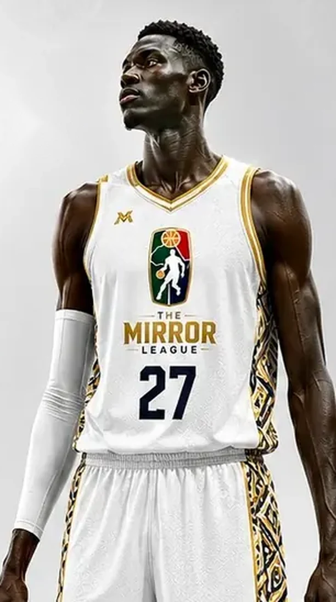

THE MIRROR PHILOSOPHY · 01 / 05
WE ARE THE
MIRROR.
Africa already has the talent. The Mirror reflects the greatness, identity and possibility that have always been here.

Connect with us ↗Africa already has the talent. The Mirror reflects the greatness, identity and possibility that have always been here.
AFRICA'S FUTURE BASKETBALL & YOUTH INNOVATION PLATFORM
The Mirror League is a proposed Pan-African basketball and youth development ecosystem designed to connect African talent with global basketball systems, innovation, technology, leadership and cultural exchange.
It brings basketball, education, technology, media, entrepreneurship and diplomacy into one future-focused African platform — developing world-class athletes, empowering young people, strengthening communities and creating new economic opportunities across the continent.
Africa and the world co-creating the future of basketball.
To develop a Pan-African basketball and youth innovation ecosystem that empowers African youth through sports, leadership, technology, entrepreneurship and global collaboration.
To position Africa as one of the world's leading basketball development ecosystems while creating sustainable pathways for youth empowerment, international collaboration and economic growth.
WHAT THE MIRROR REPRESENTS
The Mirror is an identity and a belief in African potential. It reflects what is possible when talent meets opportunity, when local identity connects with global knowledge, and when young people can see themselves as creators of the future — not spectators waiting for it.
The Mirror League is not an imitation of the NBA. It is an African-led platform for Africa and the world to co-create the future of basketball.
Elite African basketball development.
Pan-African collaboration.
Future-focused sports systems.
African pride and culture.
Youth empowerment.
International competition and collaboration.

WHY AFRICA. WHY NOW.
Africa's athletic talent, cultural influence, creativity and entrepreneurial potential are extraordinary. Yet many athletes and communities continue to face gaps in the systems that turn potential into opportunity.
The Mirror League seeks to bridge these gaps through excellence, opportunity and international collaboration — while promoting positive African narratives on a global stage.
MORE THAN THE GAME
The Mirror League is designed as an interconnected sports, development, media and innovation ecosystem. Each layer strengthens the others.
Build local belonging and continental fan culture through African team identities, city pride, adapted team philosophies, coaching exchange, training camps and digital storytelling.
IDENTITY · CULTURE · FANDOMThe talent-development engine: grassroots pathways, coaching, scouting, sports science, leadership and education — supporting players as they progress.
U14 · U18 · U23 · PROFESSIONALShowcase games, tours, finals, music, technology showcases and creator experiences make African basketball a compelling cultural and media property.
LIVE EVENTS · MEDIA · CULTUREThese are proposed components of the long-term ecosystem. League operations, franchise relationships and events will be developed in phases.

THE NEXT GENERATION
The Mirror League is designed to develop young Africans not only as athletes, but also as leaders, innovators, creators and future professionals.
The proposed youth development system includes basketball opportunities, leadership and mentorship, educational partnerships, digital and media skills, entrepreneurship, community outreach and gender inclusion initiatives. A women's academy track is included in the strategic plan.
BEYOND THE COURT
Basketball is the starting point. The opportunity reaches into education, jobs, culture, technology, enterprise and international relationships.
Basketball development, coaching, scouting, athlete exposure and pathways to professional opportunities.
Mentorship, educational partnerships, youth leadership, life skills and positive identity development.
Performance analytics, sports data, digital broadcasting, storytelling, creator opportunities and digital skills.
Sports tourism, local business growth, entrepreneurship, merchandising, media production and investment.
Pan-African identity, cultural exchange, sports diplomacy and Africa–America collaboration.
Community outreach, gender inclusion and opportunities that extend beyond major sporting centres.
A CONTINENTAL EXPERIENCE
A proposed travelling celebration of basketball and African creativity — bringing together showcase games, youth clinics, music, technology, entrepreneurship forums, AI and sports analytics workshops, fashion and creator culture.
Explore collaboration ↗TECHNOLOGY & INNOVATION
Technology is an enabler of athlete development, fan connection and a modern African sports economy.
AI-powered performance analytics, sports data and scouting tools.
Livestream systems, digital sports media and multilingual audience access.
Platforms and partnerships for African basketball storytellers and creators.
Virtual engagement and future possibilities such as interactive viewing and digital collectibles.
These are strategic development areas and future possibilities, not a statement that all services are currently operational.
A PHASED AFRICAN BUILD
The strategic plan deliberately sequences the work: establish legitimacy, prove the experience, build talent infrastructure, then expand continental competition.
Introduce the vision, convene sports, government, education, technology and media partners, and build founding relationships.
Prove the concept through a high-quality exhibition event, youth engagement, entertainment and media storytelling.
Develop regional youth programmes, coach development, scouting, digital training and women's academy pathways.
Progress toward structured continental competition, broadcasting partnerships and a championship ecosystem.
The phases and dates are strategic targets from the May 2026 plan, not announcements of confirmed events, partners or operational launch dates.
AFRICA & THE WORLD
The Mirror League seeks collaboration with sports organisations, national federations, governments, educational institutions, technology companies, broadcasters, brands and community partners.
Start a conversation ↗THE VISION BEHIND THE MOVEMENT
“Africa already possesses some of the greatest basketball talent in the world. THE MIRROR exists to build the systems, culture, infrastructure, and global platforms needed to reveal that greatness to the world.”
Brian Odoch Emmanuel
LET'S BUILD WHAT COMES NEXT
For partnership enquiries, institutional collaboration, media, youth programmes or general information, connect with The Mirror League.
Nakinyuguzi Upper, Luwafu, Makindye Division, Kampala, Central Uganda
Registered business name: MIRROR SPORTS LEAGUE. The Mirror League is the public-facing brand and proposed Pan-African basketball ecosystem.